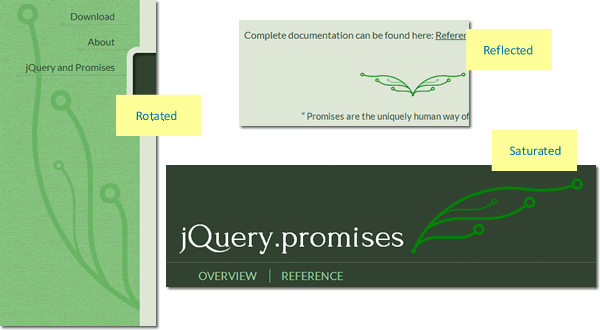
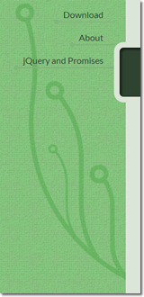

In its many projects, Dharmafly creates many useful and reusable code modules. These often get released as open source projects with accompanying documentation and websites.
In order to give these a common feel and to update many of the smaller projects, I was tasked with creating a reusable template set for easily creating new project websites based on site documentation. You can see a couple of example Dharmafly projects sites for jQuery.promises and Pablo.
Given the designs for the site included flat-colour, line-based graphic elements that varied according to a colour theme, it made sense to attempt to apply these with SVG.
SVG (Scalable Vector Graphics) are graphic imagery created from a readable definition of the lines, colours and points involved, rather than a binary file containing a description of every pixel.
As the images are defined as lines and points, these have the advantage of being editable as text, rather than editing by opening up Photoshop to make changes.
To add these graphics to the page, we used a variety of techniques that make use of SVG. Beyond creating graphics, we also used SVG to manipulate existing static images to emulate techniques that would have been used in the original Photoshop designs.
Many techniques formally available only to image editing programmes (blur, greyscale) are now available within the browser, using SVG. This means that instead of cutting flat, uneditable graphics and using these in a web page, developers can now read the designer's intention from the Photoshop file and apply this in the browser.
So, instead of using a desaturated image with a semi-transparent overlay, we now have the original asset, desaturated in the browser and given a semi-transparent overlay.
The advantage is that many aspects of the original image, such as colour, transparency level, can be changed in many versions of the site without creating new assets.
Having considered SVG as a choice for colour-themed line-based graphics, we now had to decide how to apply these to the page.
SVG can be added directly to a page using HTML5, however with the same element used multiple times and at multiple sizes and rotation,  a method would need to be used that would allow these changes using a single, cacheable asset.
The alternative implementations would be adding to the page using object and img elements, which allow caching of the SVG file. object allows you to specify fallbacks if SVG is not supported. An img element would have the same caching advantage, but [prevents links within the SVG working] (http://www.sitepoint.com/add-svg-to-web-page/) (an img element would be lighter). In both cases, the SVG DOM nodes are not part of the document, but the object and img elements would be.
Given the graphical elements within our designs were not interactive and were purely decorative, we chose to add them using CSS background-image. This way the SVG file would be cached, and could be manipulated visually (as a whole) using CSS rules. The SVG element would be semantically separate from the page in a way that the direct, object and img techniques would not.
The chief advantage in our case was that multiple instances of the same asset can be loaded once, reused, coloured and transformed and scaled to create very many decorative elements.
The main page image is complex enough to merit its own external file, with the caching benefits this implies. Less complex elements would not merit an external file (for example the underlines, comprising a line and a disc) and there would be an advantage in specifying them so an HTTP request would not be required.
The immediate thought is a data URI, most commonly used with simple PNG images. Would it be possible to place an SVG element within a CSS background-image url value?
Chrome supports unencoded data URIs as urls for background-image CSS properties as follows
'data:image/svg+xml;utf-8,<svg width="33" height="34" xmlns="http://www.w3.org/2000/svg"><line y2="31.5" x2="30.5" y1="2.5" x1="2.5" stroke-width="5" stroke="#000000" fill="none"/></svg>'
Unencoded data URIs are not supported by Firefox, so initially we encoded using base64. This is not human-readable, of course, which was one of the reasons for choosing SVG to allow easy updating.
As shown in this article, [SVG data URIs can be escaped] (http://stackoverflow.com/questions/11703541/using-a-data-encoded-svg-as-a-css-filter) providing a (partially) readable version of the SVG.
'data:image/svg+xml;%3Csvg%20width%3D%2233%22%20height%3D%2234%22%20xmlns%3D%22http%3A//www.w3.org/2000/svg%22%3E%3Cline%20y2%3D%2231.5%22%20x2%3D%2230.5%22%20y1%3D%222.5%22%20x1%3D%222.5%22%20stroke-width%3D%225%22%20stroke%3D%22%23000000%22%20fill%3D%22none%22/%3E%3C/svg%3E'
Escaped URIs can be unescaped easily in the browser console, but unlike base64 don't require unescaping in order to be edited.
background-image SVG elementsThe SVG background images (either as files or data URIs) were not only set as background images to elements (as with the main header), but set on the page in generated content pseudo-elements. Example of generated content elements here.
This was to avoid any clash with existing background images and to give the decorative elements their own containers.
Once added to the page the background images could be transformed and scaled using CSS3 (proprietary declarations not shown):
transform: rotate(270deg);

The image is rotated from its standard orientation (with opacity at 50% applied).
-webkit-filter: saturate(4.8)
Changes the background image from a standard darker colour to a more saturated colour (this is more useful on an imported SVG where the colours could not be changed in the CSS file). This technique is currently webkit only, though can be achieved with an SVG filter - see below for this technique.
transform: scaleX(-1);

There are two generated content elements here (:before and :after). The second is flipped on the x-axis creating a reflection. Both use the same original file as the header.
* show not working in IE9, create a reduced test case, if bug file bug report multiple backgrounds (with gradient) *
The key benefit of using SVG background images within our site CSS was to allow colour changes with a site theme.
The sites are using Jekyll/Liquid to create project websites. The site uses Jekyll to declare colour variables in a theme file that are then added to any site's CSS as Liquid tags.
For example in the theme file you have link_colour: "#2f4430", which is evaluated in the main CSS file via the template tag:
a {
color: {{ page.link_colour }};
text-decoration:underline;
}
This means that creating differing coloured graphical elements is possible with SVG data URIs in a way that is not possible with static images.
Given our need to have escaped data URIs this would give us something like
background-image: url('data:image/svg+xml,%3Csvg%20width%3D%22403%22%20height%3D%228%22%20xmlns%3D%22http%3A//www.w3.org/2000/svg%22%3E%3Cline%20stroke%3D%22%23{{ page.subnav_underline }}%22%20stroke-width%3D%222%22%20x1%3D%224%22%20y1%3D%224%22%20x2%3D%22400%22%20y2%3D%224%22%20/%3E%3Ccircle%20fill%3D%22%23{{ page.subnav_underline }}%22%20cx%3D%224%22%20cy%3D%224%22%20r%3D%224%22%20/%3E%3C/svg%3E');
where the colours are populated as page.subnav_underline.
The last SVG technique used is a pair that replicate what might formerly have been done in Photoshop and exported as an image. The instructions are shown in this screenshot  and are replicated in SVG.
and are replicated in SVG.
Firstly an SVG filter is created to set the background image greyscale,
filter:url(data:image/svg+xml,%3Csvg%20xmlns%3D%22http%3A//www.w3.org/2000/svg%22%3E%3Cfilter%20id%3D%22desaturate%22%3E%3CfeColorMatrix%20type%3D%22saturate%22%20values%3D%220%22/%3E%3C/filter%3E%3C/svg%3E#desaturate);
unescaped:
<svg xmlns="http://www.w3.org/2000/svg"><filter id="desaturate"><feColorMatrix type="saturate" values="0"/></filter></svg>
This technique can be be completed natively in webkit
-webkit-filter: grayscale(1);
then the semi-transparent colour overlay is applied as an SVG circle, with rgba background and a solid stroke.
Full demo here.
The original asset required from the graphics editing program is this single sprite file  and can be viewed on these example project web sites: jQuery.promises and Pablo.
and can be viewed on these example project web sites: jQuery.promises and Pablo.
Font icons are useful for many scaleable colourable icons, such as those created in Symbolset and icons used in github. The drawback is that unless you are using standard images, it is not trivial to create custom fonts.